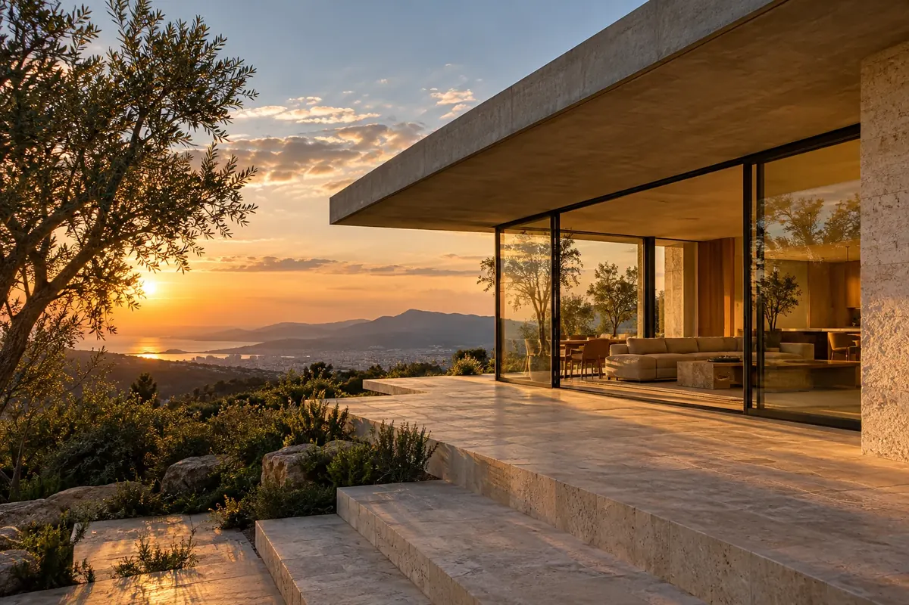
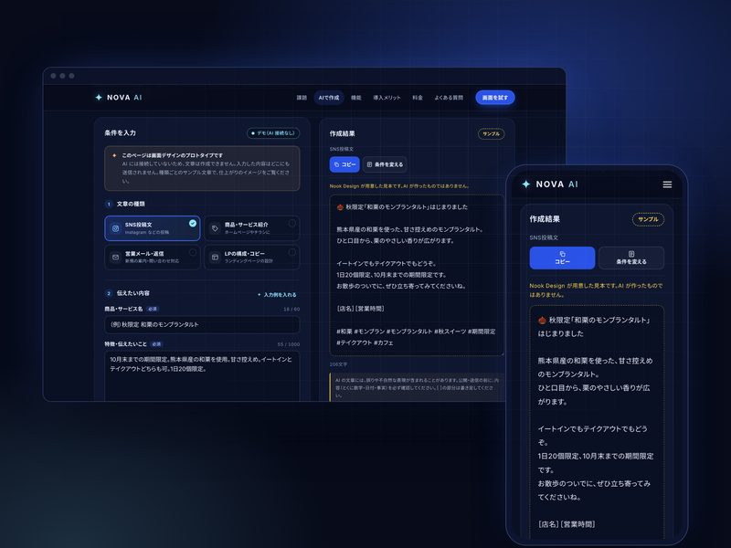
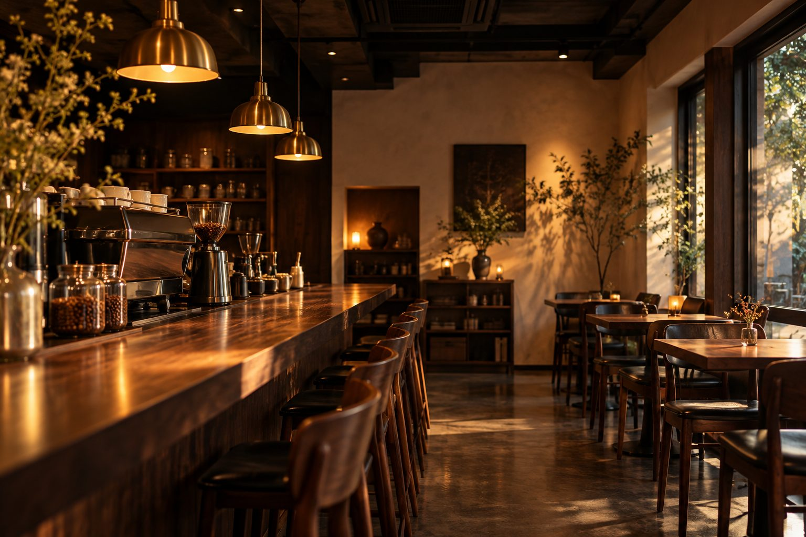
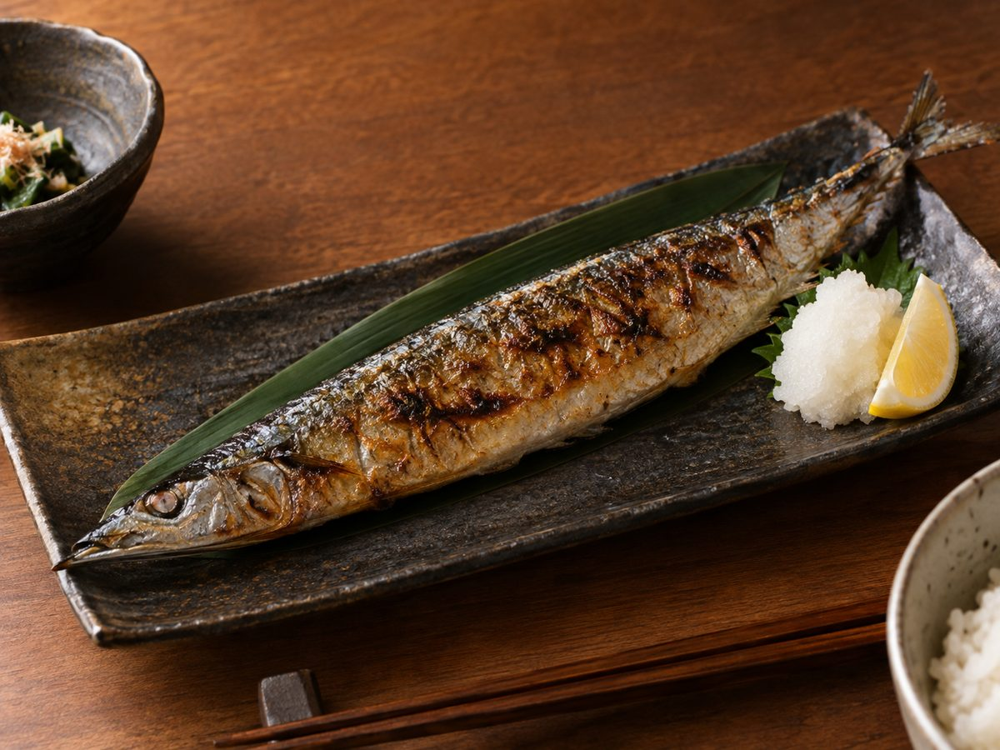

WORKS
Nook Design 制作実績
飲食店や小規模事業者のWebサイト、ブランドサイト、ランディングページから、Webサービスの画面設計（UI/UX）まで制作しています。
-
LANDING PAGE｜1ページ
Lueur
架空のヘアサロン＆ヘッドスパのランディングページ（コンセプト・メニュー・料金・施術の流れ・スタイル・よくある質問）
コンセプト設計・文章・Webデザイン・コーディングサイトを見る →
-

WEBSITE｜7ページ
RENOVA
架空の建築・リノベーションブランドの公式サイト（トップ・コンセプト・施工事例・サービス・会社紹介・お問い合わせ）
コンセプト設計・文章・Webデザイン・コーディングサイトを見る →
-

SAAS PROTOTYPE｜Webアプリケーション
NOVA AI
AI文章作成SaaSのプロトタイプ（SNS投稿文・紹介文・営業メール・LPコピーの作成）
UI/UX設計・LPデザイン・フロントエンド実装制作の詳細を見る →
-

WEBSITE｜5ページ
NOOK COFFEE
架空の自家焙煎カフェの公式サイト（トップ・メニュー・コンセプト・お知らせ・アクセス）
コンセプト設計・文章・Webデザイン・コーディングサイトを見る →
-

WEBSITE｜1ページ
酒肴 灯ノ間
架空の和食居酒屋の1ページWebサイト
コンセプト設計・文章・Webデザイン・コーディングサイトを見る →
※ 掲載している店舗・ブランド・サービスはすべて架空です。店舗情報・会社情報・価格・お知らせは架空の設定で、写真は AI で作成したイメージ画像です（NOVA AI の画像は、制作した画面のスクリーンショットです）。
ホームページ制作のご相談は、Nook Design のサイトからお気軽にどうぞ。
お問い合わせ